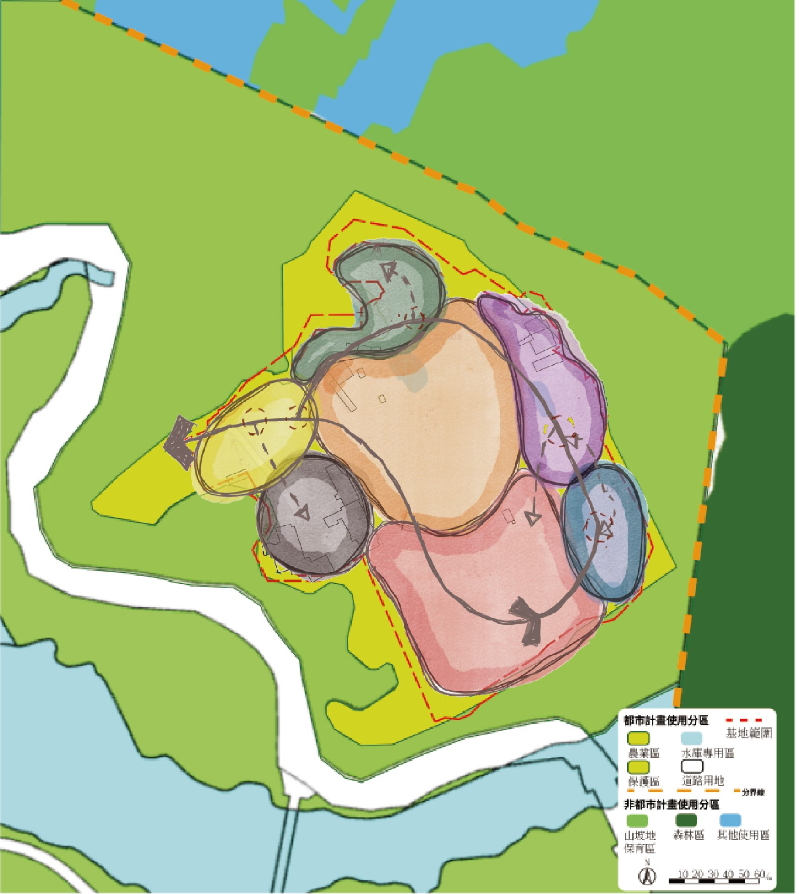
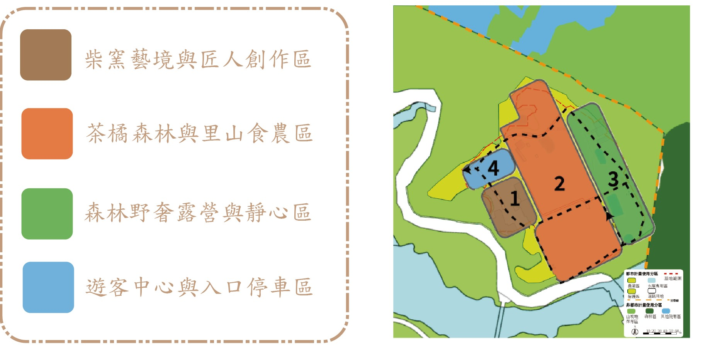

全區配置互動導覽沙盤 (Master Plan)

文化產業核心 ． 職人合院
分區詳解
柴窯藝境與匠人創作區 (明德窯)
以歷史明德柴窯為人文靈魂，保存四天三夜柴燒落灰之美。將廢棄陶片與失敗陶甕轉化為園區步道鋪面與樹牌，提供陶藝拉坯、捏陶體驗與客庄茶器展售。

核心機能與規劃重點：
嚴格恪守休閒農業輔導管理辦法 ． 減量設計原則
經濟人氣引擎
橙香森林 ． 草生柑橘果園
位於向陽緩坡處，擁有大面積老欉桶柑。落實草生友善農法，春季柚花飄香引蝶，秋冬金黃採果；搭配全景玻璃屋景觀餐廳，構築六級食農體驗亮點。
深度停留核心
小路彎彎 ． 山林野奢露營
緊臨果園與原始次生林交界，順應緩坡等高線配置離地高架帳篷。夜間實施低光害友善照明，保護條背螢火蟲與山羌棲地，動靜互補延長遊客停留時光。
文化人文靈魂
明德柴窯 ． 客庄柴燒工藝
傳承陳奶奶四天三夜柴火溫度的傳統登窯。不上釉藥，純靠木材落灰與火痕燒結獨特肌理。結合陶藝DIY、廢陶循環再生步道與客庄茶器體驗，喚醒老田寮手作記憶。